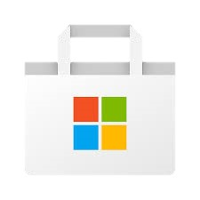

윈도우 8, 윈도우 8.1, 윈도우 10의 메트로 스타일 앱들을 위한 디지털 유통 플랫폼이다. 윈도우 스토어는 개발자가 데스크톱 앱 또한 광고할 수 있다. $1.49에서 $999.99까지의 유료 앱 또는 무료 앱을 지원한다.
무료 평가판도 등록 할 수 있도록 되어있다. 윈도우 스토어는 2012년 2월 29일, 윈도우 8 소비자 프리뷰의 출시와 동시에 제공되었다.
윈도우 스토어는 사용자에게 메트로 스타일의 앱을 배포할 수 있는 유일한 수단이 될 것이라고 했다; 공식적인 이유는 MS가 보안 취약성과 악성 코드에 대한 앱을 검열할 수 있도록 하기 위함이다.(단, 소비자 미리보기 버전에서는 개발자 등록을 하고 나면,
메트로 스타일의 프로그램을 다른 곳에서 다운로드 받아 설치할 수 있다.) 윈도우 스토어 앱 매출의 30%를 가져간다. 만약 프로그램의 매출이 $25,000가 넘어가면, 20%로 줄어든다.
제 3자의 거래 또한 허락되는데 이 경우로 MS에서 따로 수익을 얻지는 않는다. 개인 개발자는 $49에 개발자 등록을 할 수 있고, 기업 개발자는 $99에 등록할 수 있다.